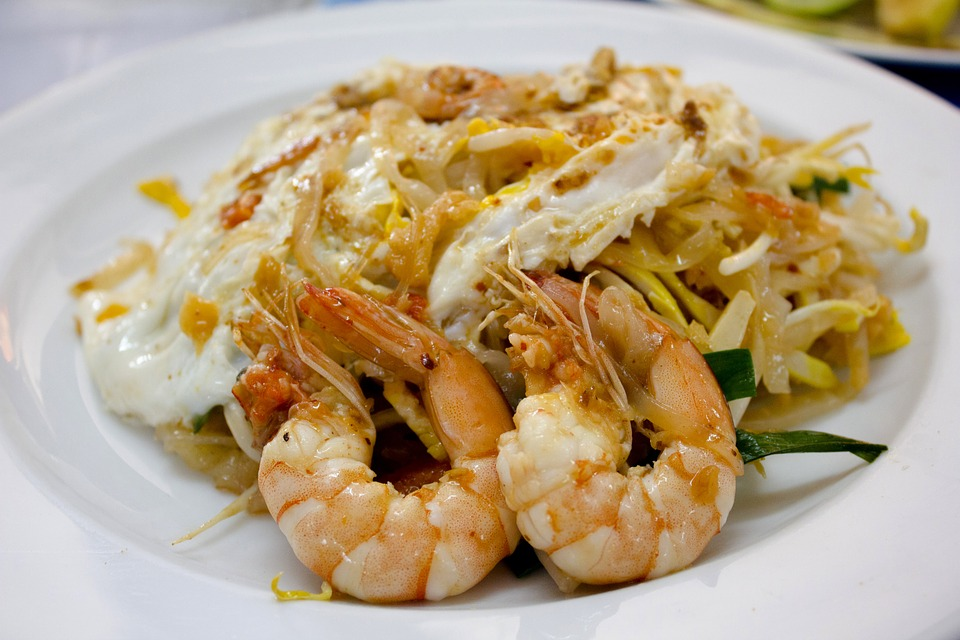
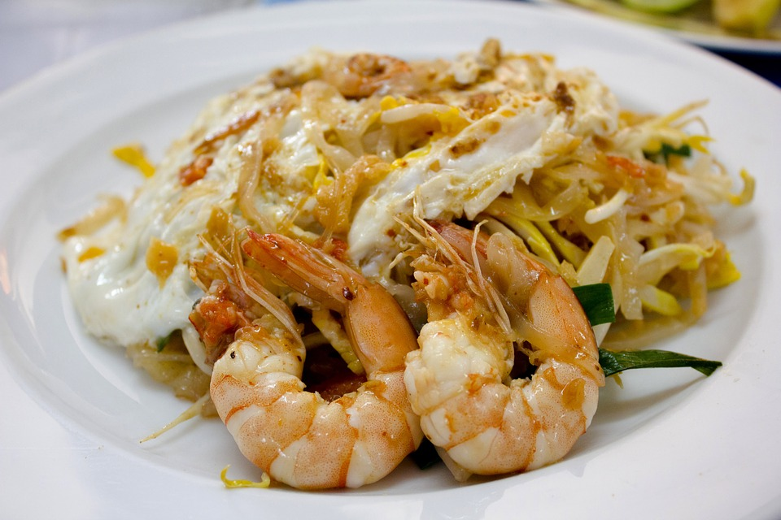

Basil Beef Sesame Salad
Spicy Angus beef and sweet basil on top of fresh spring mix,
red cabbage, carrot, cucumber and tomatoes; served with
sesame vinaigrette ($9.95)
Curbside Rice
Stir-fried rice with onions, red bell peppers, peas and
carrots, garnished with red cabbage, cucumbers, scallions,
and fried garlic ($6.50); add chicken ($8.50)
or shrimp ($9.50)
Garlic Pepper Pork
Marinated pork stir-fried with fresh garlic and pepper;
served with steamed Jasmine rice, red cabbage, carrot,
cucumbers, scallions, and fried garlic ($8.50)
Pad Thai
Stir-fried rice noodles with beat sprouts and chives,
garnished with red cabbage, carrot,
scallions, lime, and crushed peanuts ($7.50);
add chicken ($8.50) or shrimp ($9.50)
Thai Red Curry
Traditional red curry sauce cooked in coconut milk with
bamboo shoots, fresh basil, lime, and Thai chili and
served on a bed of steamed Jasmine rice ($7.50); add
chicken ($8.50) or shrimp ($9.50)
 
